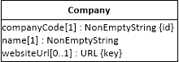
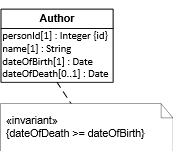

5.5. Questions and Exercises
Questions
Complete the following sentence for defining the meaning of uniqueness constraints: A uniqueness constraint defined for an attribute requires that ...
Consider the class diagram on the right.
Which of the following constraints are specified by the class model?
Select one or more:
How many constraints are specified by the class model shown in the diagram?
Enter a number: _____
Exercises
The following case description explains the business processes of an enterprise and provides a conceptual model of its business domain. Using the conceptual model as a starting point, make an information design model for building an information system.
The Royal and Loyal (R&L) company handles loyalty programs for companies that offer their customers various kinds of bonuses such as bonus points, air miles, reduced rates, a larger car for the rate of a smaller one in a Car Hire company, extra or better service on an Airline.
A company that offers its customers a membership in a loyalty program is called a program partner. More than one company can enter into the same program. In such a case, customers who enter the loyalty program can profit from services rendered by any of the participating companies.
Any person can enter the loyalty program (that is, become a member of it) by filling in a form and obtaining a membership card. The membership card is issued to one person. Since its use is not checked, the card could be used as a family or business card. Most loyalty programs allow customers to save bonus points. Each individual program partner decides when and how many bonus points are allotted for a certain purchase. Saved bonus points can be used to “buy” specific services or items from one of the program partners. To account for the bonus points that are saved by the customer, every membership can be associated with a loyalty account.
For example, the loyalty program “Buy and Fly” has 3 program partners: a supermarket chain, a chain of petrol stations and an airline:
- At the supermarket a customer earns 5 bonus points for £1 spent above £10.
- The petrol stations offer a discount of 5% on every bill. They do neither offer nor accept bonus points.
- Customers can save bonus points for free flights with the airline. For every normal flight the airline offers 1 bonus point for each 15 miles of flight.
The domain concepts involved in the described business processes are captured by the following conceptual information model: